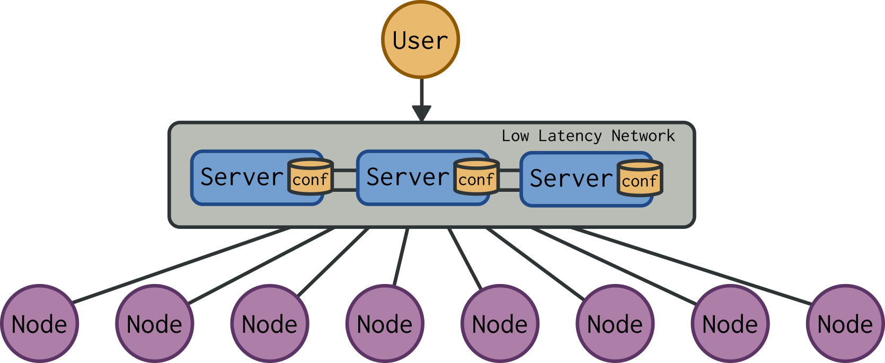
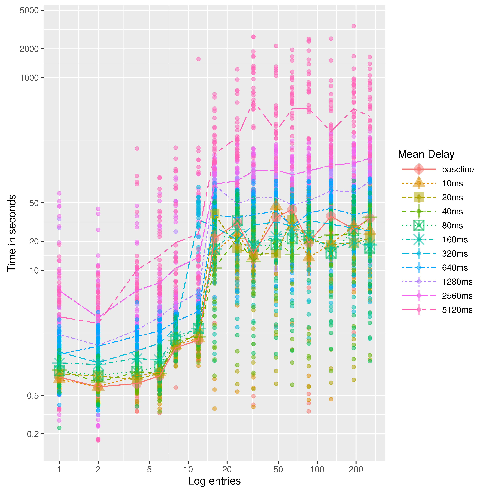
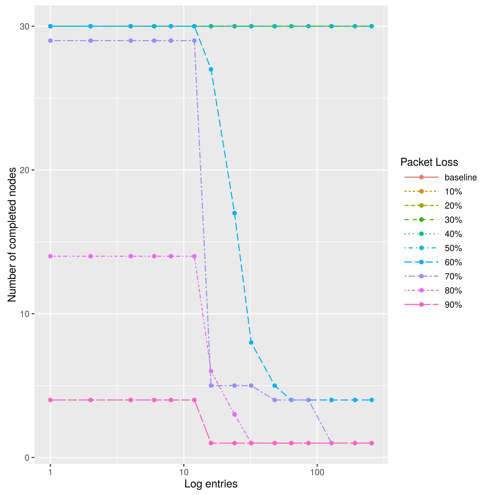
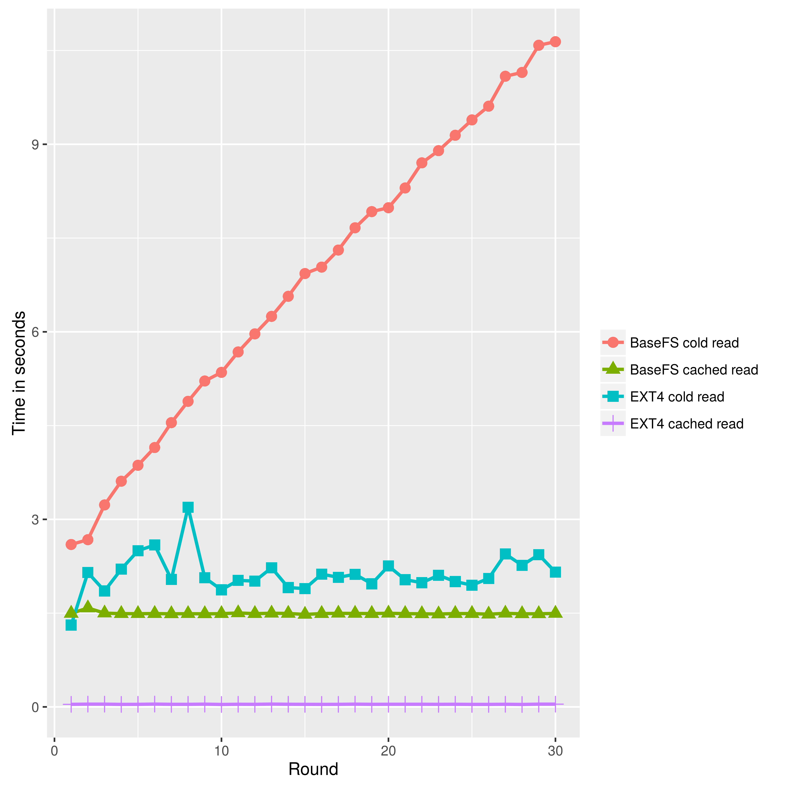

BaseFS
Basically Available, Soft-State, Eventually Consistent File Sytstem for P2P Cloud Management
Created by Marc Aymerich /
glic3rinu.github.io/basefs/presentation
Cloud Management
Client-Server Architecture


HA Client-Server Architecture
Traditional Cloud is
Centralized
Community Cloud is
Peer-to-peer
How can we do better
P2P management?
Consistency or Availability ...
... You must choose wisely
Eventual Consistency
- Available under partition:
No need for stable quorums - Weakly consistent communication channel:
Gossip-style network protocol, REST or RPC NO APIs - High performance:
Progress without coordination - Nodes don't need to trust each other: Byzantine
failures on SC systems are practically untractable - Geographic and administrative scalability
BaseFS
BaseFS Under The Hood
- Log - Merkle DAG of inmutable entries
- View - Conflict resolved composition of the log
- Gossip protocol - Membership and initial dissemination
- Synchronization protocol - Full state sync
- File system - Provides file system API for the view
- Modules - Overview of BaseFS components
Log
- Log entries: filesystem metadata "i-nodes"
- Blocks: file content chunks
Log Entries

revoke, ack, link, slink, mode
Log Entries Properties
- Merkle Direct Acyclic Graph
- Content addressing: uniquely identified by its hash
- Tamper resistance: hash verification
- Deduplication: objects with same hash are equal
- Casual ordering: object linked is older
- Convergent Replicated Data Type
- Message loss: associativity f(f(a, b), c) = f(a, f(b, c))
- Message reordering: commutativity f(a, b) = f(b, a)
- Multiple delivery: idempotency f(f(a)) = f(a)
Log Blocks
- Hashed linked list
- Bsdiff4 patches in 483B chunks

View
- Proof-of-authority:
- Higher hierarchy key branch
- If equal, more contributors branch
- If equal, higher root hash branch
View Example

Gossip Protocol

/etc number of messages

Synchronization Protocol
- Log disemination
- after partition
- large files
- bootsrap joining nodes
- Unseen-biased randomized node selection
- Efficient divergence detection with Merkle trees
File System API
Module Overview

Evaluation
Parametrization
Param: Max Gossiped Blocks

Param: Sync Protocol Interval

Param: Docker Cluster Size

Network Evaluation
- Virtual Environment based on:
- 30 nodes cluster
- Write to one node and measure convergence time
Latency
Bandwidth

Packet Loss
Community-Lab
- Community Network Testbed by the CONFINE project
- 36 node slice with public IPv4 connectivity

Community-Lab: Convergence

Com-Lab: Traffic distribution

File System IO Evaluation
File System Read Performance
File System Write Performance

Plans for world domination
- Generalized filesystem
- Distributed Dropbox-like applications
- System upgrade on distributed systems
- Shared in-memory databse (memcache)
- Mutable P2P file-sharing
- Self-updatable documents (encycolpedia, discography)
- Distributed version control system